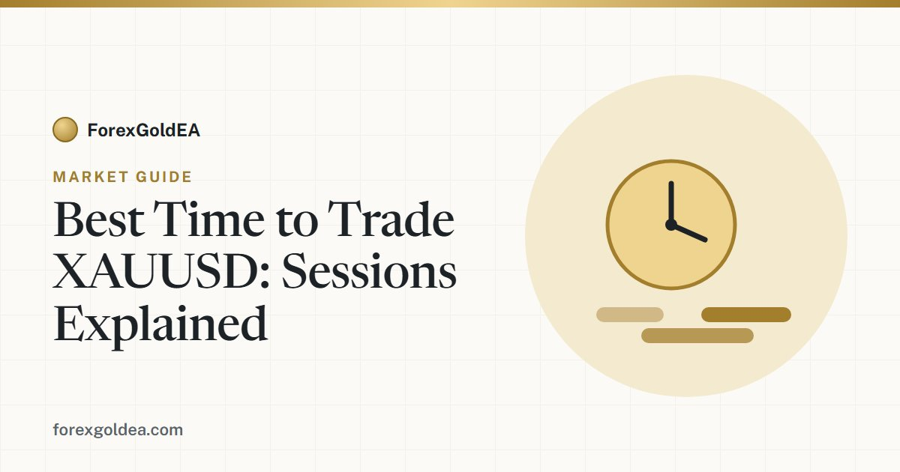

Best time to trade XAUUSD: gold trading sessions explained

Gold (XAU/USD) trades almost around the clock, but it doesn't move the same way all day. Knowing when gold is most active — and when it's quiet — helps you (or your EA) trade the hours that actually offer opportunity. Here's a clear breakdown of the sessions.
Gold trades nearly 24 hours — but not evenly
XAU/USD follows the forex week: it opens Sunday evening and closes Friday evening (with a short daily break), roughly 23 hours a day. But liquidity and volatility shift a lot depending on which financial centres are open. Some hours barely move; others produce most of the day's range.
The three main sessions
All times below are approximate and in UTC — adjust to your own timezone, and remember they shift by an hour when major regions change to/from daylight saving.
| Session | Approx. hours (UTC) | Gold behaviour |
|---|---|---|
| Asian (Tokyo) | 00:00 – 08:00 | Usually quieter; tighter ranges, slower moves |
| London | 07:00 – 16:00 | Activity picks up sharply; trends often begin |
| New York | 13:00 – 22:00 | High activity, especially around US data |
The London–New York overlap is the sweet spot
The most active window for gold is usually the overlap when both London and New York are open — roughly 13:00–16:00 UTC. Liquidity is deepest, spreads tend to be tightest, and the biggest, cleanest moves of the day often happen here. If you only watched one window, this would be it.
Watch the news clock
Gold is highly sensitive to US economic data and central-bank events. Releases like inflation (CPI), the monthly jobs report (NFP) and Federal Reserve decisions can move XAU/USD sharply within seconds. These typically land during the US morning and early afternoon. Big opportunity — but also sudden, whippy moves and wider spreads, so it pays to have your risk defined before the number prints.
What this means for an automated EA
An expert advisor can trade 24/5, but that doesn't mean it should trade every hour. A well-designed gold EA often uses a session filter so it focuses on the high-liquidity windows (like the London–NY overlap) and stays out of thin, choppy periods. ForexGoldEA is built around XAU/USD's rhythm, and running it on a VPS keeps it active through the sessions that matter without you watching the screen.
A quick word on risk
More activity means more opportunity and more risk. High-volatility windows — especially around news — can move against you fast. Keep a fixed stop on every trade, size your risk to the market's range, and remember that backtested figures are historical and do not guarantee future results. Trading gold on margin carries a high level of risk and may not be suitable for everyone.
Bottom line
Gold moves most during the London session and the London–New York overlap, and around US news. Trade those windows (or let a session-aware EA do it), stay cautious in the quiet hours, and always trade with a plan. Timing won't replace a solid strategy — but trading the right hours makes a good one work harder.
Affiliate disclosure: we earn a commission when you open and fund an account through our partner links, at no extra cost to you.